8 Aprendizado de Máquina
A aplicação de aprendizado de máquina ou modelagem algorítmica está em crescente expansão. A aplicação deste tipo de metodologia usualmente utiliza modelagem preditiva, e não inferencial. Para maiores detalhes veja a discussão nas Seções 1.2 e 1.3 de (Izbicki and Santos 2020), bem como nos slides disponibilizados pelo professor neste link.
8.1 Análise de Componentes Principais (PCA)
A Análise de Componentes Principais (PCA, na sigla em inglês) é uma técnica de redução de dimensionalidade usualmente aplicada a um grande número de variáveis relacionadas, de forma a capturar o máximo possível da variabilidade do conjunto de dados. Foi introduzida por (Pearson 1901) e estudada independentemente por (Hotelling 1933) e outros pesquisadores que abordaram o problema de formas variadas. Considerando a definição de (Bishop 1999), seja um conjunto de dados \(X\) de dimensão \(n \times p\) composto por \(n\) vetores \(p\)-dimensionais conforme indicado a seguir. \[ X = \begin{bmatrix} x_{1,1} & x_{1,2} & \cdots & x_{1,p} \\ x_{2,1} & x_{2,2} & \cdots & x_{2,p} \\ \vdots & \vdots & \ddots & \vdots \\ x_{n,1} & x_{n,2} & \cdots & x_{n,p} \end{bmatrix} = \begin{bmatrix} \boldsymbol{x}_{1} \\ \boldsymbol{x}_{2} \\ \vdots \\ \boldsymbol{x}_{n} \end{bmatrix} \]
Deste conjunto de dados calcula-se a matriz de covariâncias amostrais \(\boldsymbol{S}\) dada por \[\begin{equation} \boldsymbol{S} = \dfrac{1}{n} \sum_{i=1}^{n} (\boldsymbol{x}_{i} - \bar{\boldsymbol{x}}) (\boldsymbol{x}_{i} - \bar{\boldsymbol{x}})^T, \tag{8.1} \end{equation}\] onde \(\bar{\boldsymbol{x}} = n^{-1} \sum_{i=1}^{n} \boldsymbol{x}_{i}\) é o vetor de médias amostrais. São obtidos os autovetores \(\boldsymbol{u}_i\) e os autovalores \(\lambda_i\) de \(\boldsymbol{S}\) pela equação \[\begin{equation} \boldsymbol{Su}_i = \lambda_i \boldsymbol{u}_i, \tag{8.2} \end{equation}\] \(i=1,\ldots,p\). Os autovetores correspondentes aos \(q\) maiores autovetores (\(q<p\)) são mantidos, e uma representação de dimensão reduzida é definida por uma combinação linear dos autovetores e dos dados deslocados pela média. Matematicamente, \(d_n=\boldsymbol{U}^T(\boldsymbol{x}_n - \boldsymbol{\bar{x}})^T\) onde \(\boldsymbol{U}_q=(\boldsymbol{u}_1,\ldots,\boldsymbol{u}_q)\).
## Sepal.Length Sepal.Width Petal.Length Petal.Width
## 5.84 3.06 3.76 1.20## Sepal.Length Sepal.Width Petal.Length Petal.Width
## Sepal.Length 0.6857 -0.0424 1.27 0.516
## Sepal.Width -0.0424 0.1900 -0.33 -0.122
## Petal.Length 1.2743 -0.3297 3.12 1.296
## Petal.Width 0.5163 -0.1216 1.30 0.581## eigen() decomposition
## $values
## [1] 4.2282 0.2427 0.0782 0.0238
##
## $vectors
## [,1] [,2] [,3] [,4]
## [1,] 0.3614 -0.6566 -0.5820 0.315
## [2,] -0.0845 -0.7302 0.5979 -0.320
## [3,] 0.8567 0.1734 0.0762 -0.480
## [4,] 0.3583 0.0755 0.5458 0.754## Standard deviations (1, .., p=4):
## [1] 2.056 0.493 0.280 0.154
##
## Rotation (n x k) = (4 x 4):
## PC1 PC2 PC3 PC4
## Sepal.Length 0.3614 -0.6566 0.5820 0.315
## Sepal.Width -0.0845 -0.7302 -0.5979 -0.320
## Petal.Length 0.8567 0.1734 -0.0762 -0.480
## Petal.Width 0.3583 0.0755 -0.5458 0.754É possível realizar o mesmo procedimento na matriz de correlação \(R\). Esta abordagem é recomendada para evitar que os resultados sejam afetados pela escala dos valores observados.
## Sepal.Length Sepal.Width Petal.Length Petal.Width
## Sepal.Length 1.000 -0.118 0.872 0.818
## Sepal.Width -0.118 1.000 -0.428 -0.366
## Petal.Length 0.872 -0.428 1.000 0.963
## Petal.Width 0.818 -0.366 0.963 1.000## eigen() decomposition
## $values
## [1] 2.9185 0.9140 0.1468 0.0207
##
## $vectors
## [,1] [,2] [,3] [,4]
## [1,] 0.521 -0.3774 0.720 0.261
## [2,] -0.269 -0.9233 -0.244 -0.124
## [3,] 0.580 -0.0245 -0.142 -0.801
## [4,] 0.565 -0.0669 -0.634 0.524## Standard deviations (1, .., p=4):
## [1] 1.708 0.956 0.383 0.144
##
## Rotation (n x k) = (4 x 4):
## PC1 PC2 PC3 PC4
## Sepal.Length 0.521 -0.3774 0.720 0.261
## Sepal.Width -0.269 -0.9233 -0.244 -0.124
## Petal.Length 0.580 -0.0245 -0.142 -0.801
## Petal.Width 0.565 -0.0669 -0.634 0.524A proporção da variância explicada pelo \(i\)-ésimo componente principal é dada pela Eq. \(\eqref{eq:propvar}\), e pode ser visualizada em um gráfico ordenado, usualmente chamado screeplot. \[\begin{equation} PVE_i = \dfrac{\lambda_i}{\sum_{j=1}^{p} \lambda_j} \tag{8.3} \end{equation}\]
## [1] 4.2282 0.2427 0.0782 0.0238## [1] 0.92462 0.05307 0.01710 0.00521
## [1] 2.9185 0.9140 0.1468 0.0207## [1] 0.72962 0.22851 0.03669 0.00518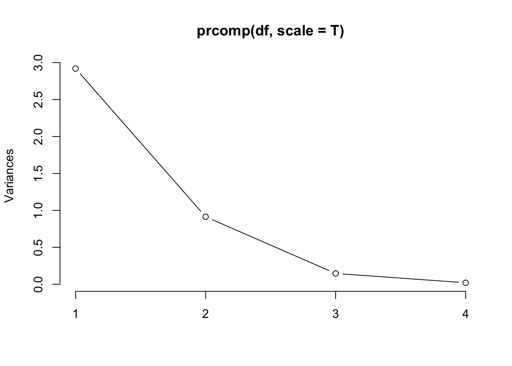
Considere o banco de dados iris, que contém 4 colunas numéricas com as larguras e comprimentos das pétalas e sépalas de três espécies de flores do gênero íris.
## Sepal.Length Sepal.Width Petal.Length Petal.Width Species
## 1 5.1 3.5 1.4 0.2 setosa
## 2 4.9 3.0 1.4 0.2 setosa
## 3 4.7 3.2 1.3 0.2 setosa
## 4 4.6 3.1 1.5 0.2 setosa
## 5 5.0 3.6 1.4 0.2 setosa
## 6 5.4 3.9 1.7 0.4 setosaExistem \({4 \choose 2} = 6\) combinações possíveis de gráficos bidimensionais, apresentados a seguir.
require(gridExtra)
p1 <- ggplot(iris, aes(Sepal.Length, Sepal.Width, colour = Species)) + geom_point()
p2 <- ggplot(iris, aes(Sepal.Length, Petal.Length, colour = Species)) + geom_point()
p3 <- ggplot(iris, aes(Sepal.Length, Petal.Width, colour = Species)) + geom_point()
p4 <- ggplot(iris, aes(Sepal.Width, Petal.Length, colour = Species)) + geom_point()
p5 <- ggplot(iris, aes(Sepal.Width, Petal.Width, colour = Species)) + geom_point()
p6 <- ggplot(iris, aes(Petal.Length, Petal.Width, colour = Species)) + geom_point()
grid.arrange(p1, p2, p3, p4, p5, p6, ncol = 2)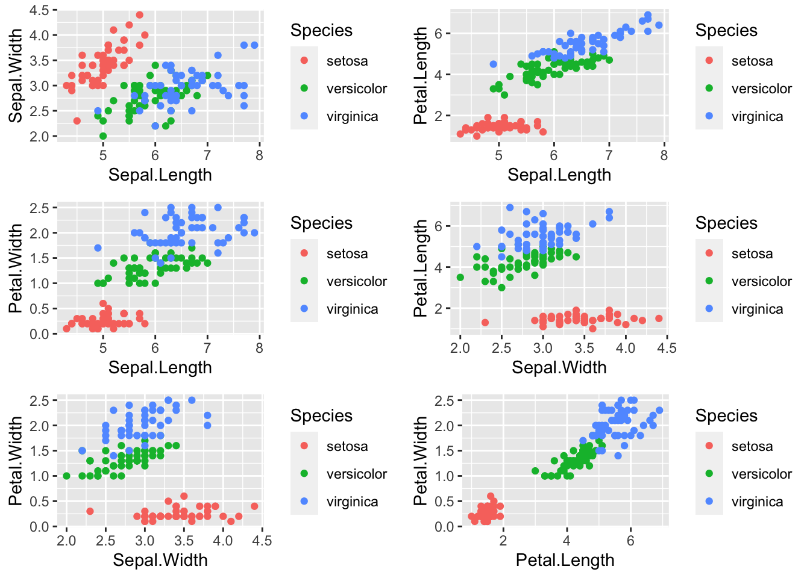
É posível utilizar o método de componentes principais para aprimorar a visualização29 da estrutura de associação entre as diferentes espécies de plantas.
library(ggfortify)
autoplot(prcomp(df), data = iris, colour = 'Species', loadings = T, loadings.label = T, type = 'raw')

V1) e o diagnóstico (V2, Benigno/Maligno).(a) Quais os valores de \(n\) e \(p\)?
(b) O que ocorre no comando
x2 <- x[,-c(1,2)]?(c) Obtenha os autovalores e autovetores.
(d) Apresente o screeplot.
(e) Apresente o gráfico dos dois primeiros componentes principais colorido por
V2.(f) Você considera que é possível associar os diagnósticos às variáveis
V3 a V32? Dica: observe se há algum tipo de agrupamento no gráfico do item (e).(g) Quais variáveis mais influenciam nos compomentes principais 1 e 2? Dica: use
loadings.label = T na função autoplot do item (e) e observe o gráfico.
8.2 Técnicas de Agrupamento
Seguindo a definição de (Hartigan 1975), agrupamento - clustering ou ainda segmentação de dados - é o agrupamento de objetos similares. Objetiva agregar observações que sejam similares em relação a características admitidas nos modelos considerados. Podem ser aglomerativas, quando definem uma delimitação ascendente - onde cada observação inicia como um grupo e se agrega com outras ao longo das iterações - ou divisivas se o cercamento é descendente - quando todas as observações começam em um grupo que vai sendo dividido a cada etapa.
A linguagem R possui diversas funções para análise de agrupamento, sendo as principais discutidas neste capítulo. Para informações atualizadas, veja https://cran.r-project.org/web/views/Cluster.html.
8.2.1 Medidas de similaridade e dissimilaridade
Distâncias e divergências são métricas utilizadas em problemas de classificação, agrupamento e reconhecimento de padrões. São utilizadas para medir a similaridade ou dissimilaridade entre pontos, vetores e distribuições. É comum realizar a padronização, i.e., subtrair cada valor da média e dividir pelo desvio padrão da coluna à qual o valor pertence. Este procedimento pode ser realizado através da função base::scale.
Medida de similaridade avalia o quão similares são dois entes, ficando entre 0 (sem similariadade) e 1 (completamente similares).
Medida de dissimilaridade indica o quão distintos são dois entes, ficando entre 0 (iguais) e infinito (diferentes).
As seguir são apresentadas algumas das principais distâncias da literatura – enquadradas na definição de medidas de dissimilaridade – e calculadas entre dois vetores \(\boldsymbol{x}\) e \(\boldsymbol{y}\), usualmente linhas de uma matriz numérica. Apresenta-se ainda um pequeno banco de dados para a aplicação dos exemplos.
# criando data frame 'df' para os exemplos a seguir
df <- data.frame(V1=c(3,1), V2=c(2,4)) # vetores V1 e V2
rownames(df) <- c('x','y') # rótulo das linhas
df## V1 V2
## x 3 2
## y 1 4## V1 V2
## x 0.707 -0.707
## y -0.707 0.707
## attr(,"scaled:center")
## V1 V2
## 2 3
## attr(,"scaled:scale")
## V1 V2
## 1.41 1.41Distância de Manhattan
A distância de Manhattan, norma 1 ou \(L_1\) é uma medida de dissimilaridade que avalia a distância absoluta entre dois vetores, dada pela Equação \(\eqref{eq:manh}\). \[\begin{equation} L_1 = \sum_{i=1}^{n} |x_i - y_i| \tag{8.4} \end{equation}\]
## [1] 4## x
## y 4## x
## y 2.83Distância euclidiana
Uma das mais utilizadas medidas de dissimilaridade da literatura, a distância euclidiana, norma 2 ou \(L_2\) é dada pela Equação \(\eqref{eq:eucl}\). \[\begin{equation} L_2 = \sqrt{\sum_{i=1}^{n} (x_i - y_i)^2} \tag{8.5} \end{equation}\]
## [1] 2.83## x
## y 2.83## x
## y 2Distância de Minkowski
A distância de Minkowski, norma p ou \(L_p\) é uma medida de dissimilaridade que generaliza as distâncias de Manhattan e euclidiana. É dada pela Equação \(\eqref{eq:mink}\). \[\begin{equation} L_p = \sqrt[\leftroot{-2}\uproot{3}p]{\sum_{i=1}^{n} (|x_i - y_i|)^p} \tag{8.6} \end{equation}\]
## [1] 2.3## x
## y 2.3dist(df.s, method = 'minkowski', p = 5) # dist. de Minkowski com p=5 via 'dist' dos valores padronizados## x
## y 1.62stats::dist.(a) Verifique sua documentação, fazendo
?dist.(b) Compare as distâncias euclidiana e de Minkowski com \(p=2\). O que você observa?
(c) Compare as distâncias de Manhattan e de Minkowski com \(p=1\). O que você observa?
pib, obtido pelo código abaixo.(a) Padronize os dados e atribua a uma variável chamada
pib.s.(b) Realize os cálculos ‘a mão’ como nos exemplos, tanto para
pib quanto para pib.s.(c) Realize novamente os cálculos do item (b) utilizando a função
dist.
8.3 Métodos hierárquicos
Como o nome sugere, os métodos hierárquicos buscam uma estrutura hierárquica dos grupos. Esta estrutura geralmente se dá em forma de árvore, onde os objetos são apresentados individualmente como um grupo unitário (folha/leaf) que se aglomeram por similaridade em grupos maiores (nós/nodes) ligados por um grande grupo que une todos elementos (raiz/root). Os passos para realizar um agrupamento hierárquico aglomerativo estão descritos a seguir.
ALGORITMO DE AGRUPAMENTO HIERÁRQUICO AGLOMERATIVO
PASSO 1 Padronizar os dados, geralmente com o uso da função
scale.
PASSO 2 Calcular a (dis)similaridade entre cada par de objetos no conjunto de dados.
PASSO 3 Usar a função de ligação para agrupar os objetos na árvore a partir das informações de distância obtidas na passo 1.
PASSO 4 Apresentar o gráfico da árvore hierárquica em grupos (dendograma), criando uma partição dos dados.
# 1. padronizando os dados
USArrest.scale <- scale(USArrests)
# 2. calculando distâncias (utilizando o padrão: euclidean)
dUSA <- dist(USArrest.scale)
# 3. aplicando a função de ligação (utilizando o padrão: complete)
hc <- hclust(dUSA)
# 4. apresentando o gráfico
plot(hc)
Os valores no eixo \(y\), intitulados height, são as chamadas distâncias cofenéticas propostas por (Sokal and Rohlf 1962). O nome vem da área da Biologia chamada fenética, que estuda métodos de classificação por similaridade fenotípica. Seu cálculo não é complexo, mas pode ser trabalhoso; assim, será considerada a função cophenetic para a obtenção de tais distâncias. Quanto maior for seu valor, mais dissimilar são os elementos comparados. Correlação elevada entre as distâncias calculadas e as distâncias cofenéticas sugere um bom agrupamento.
## [1] 0.206 0.350 0.429 0.494 0.530 0.535 0.594 0.646 0.704 0.711 0.739 0.772 0.778 0.787 0.798 0.829 0.841 0.846 0.982 0.997
## [21] 1.012 1.035 1.071 1.080 1.092 1.131 1.183 1.197 1.212 1.250 1.272 1.333 1.399 1.467 1.623 1.645 1.659 1.854 1.865 2.263
## [41] 2.295 2.337 2.446 2.475 3.088 3.255 4.401 4.420 6.077# Correlação entre as distâncias cofenéticas e as distâncias originais (maior, melhor)
cor(coph,dUSA)## [1] 0.698É possível melhorar a visualização do dendograma utilizando a função factoextra::fviz_dend.
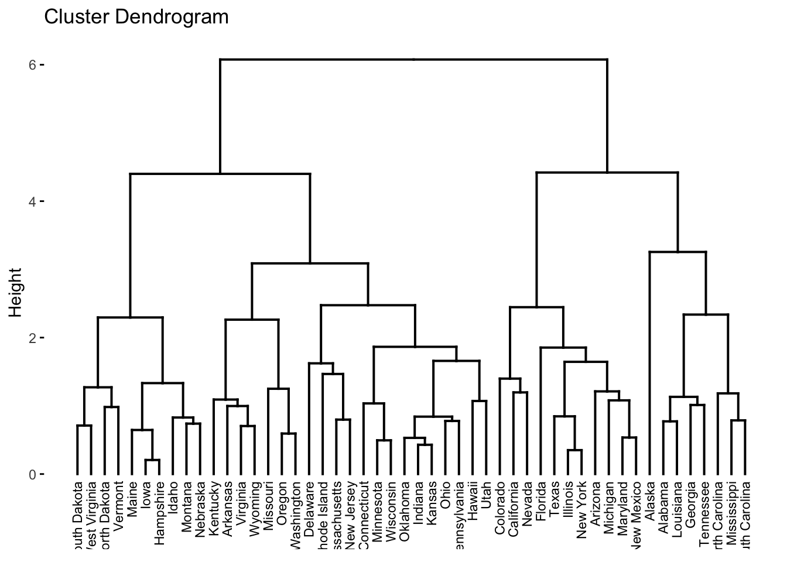
Pode-se utilizar a função fviz_dend para colorir um número arbitrário de grupos. Note que os grupamentos são obtidos de cima pra baixo, dependente dos valores de height (distâncias cofenéticas).
fviz_dend(hc, k = 2, # 2 grupos
cex = 0.6, # tamanho do texto/rótulo (label)
rect = TRUE # adiciona retângulos ao redor dos grupos
)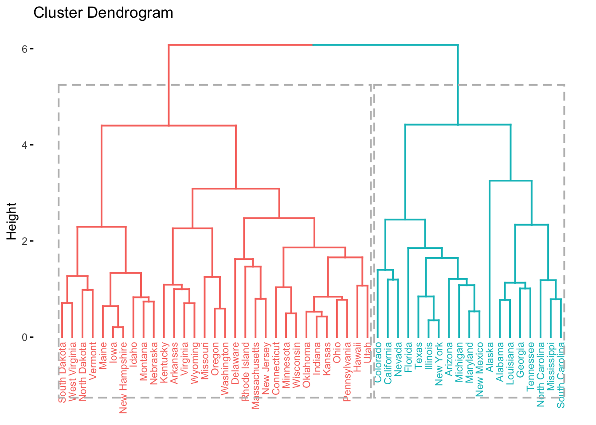
fviz_dend(hc, k = 3, # 3 grupos
cex = 0.6, # tamanho do texto/rótulo (label)
rect = TRUE # adiciona retângulos ao redor dos grupos
)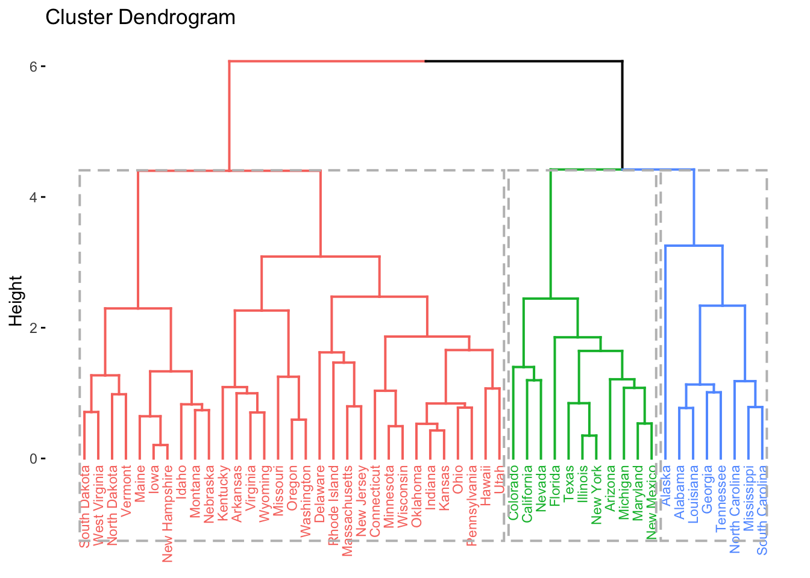
fviz_dend(hc, k = 4, # 4 grupos
cex = 0.6, # tamanho do texto/rótulo (label)
rect = TRUE # adiciona retângulos ao redor dos grupos
)
pib. Crie dendogramas com a função fviz_dend utilizando:(a) dados originais e padronizados;
(b) diferentes distâncias;
(c) diferentes números de grupos.
8.4 Métodos não hierárquicos (de particionamento)
8.4.1 K-médias
K-médias (k-means) é um nome genérico para métodos derivados dos algoritmos de (Lloyd 1957), (Forgy 1965), (MacQueen and others 1967), (Hartigan 1975) e (Hartigan and Wong 1979). A ideia básica é encontrar grupos similares, de maneira a minimizar a soma de distâncias euclidianas ao quadrado. As distâncias são calculadas entre os pontos e as médias de cada um dos \(k\) grupos, chamadas centróides.
Em relação ao modo de busca podem ser classificados como algoritmos de comutação, em que objetos devem ser particionados em \(k\) de grupos. Uma partição inicial é dada de forma arbitrária, onde se definem \(k\) centróides. Calcula-se a distância euclidiana ao quadrado entre as observações e os \(k\) centróides. O centróide mais próximo define o grupo ao qual uma observação pertence. Recalculam-se os novos centróides, e novas partições são obtidas com a alternância dos objetos entre os grupos. O algoritmo encerra quando nenhuma comutação adicional reduz a soma de quadrados intra-grupo, ou quando outro critério de parada é atingido.
São algoritmos relativamente rápidos na execução, mas são afetados pela incerteza da partição inicial. Há sempre a possibilidade de que partições iniciais distintas possam levar a partições finais superiores a outras.
A variação quadrática intra-grupo (\(VQI_{j}\)) do \(j\)-ésimo grupo é dada pela Equação \(\eqref{eq:vqi}\). \[\begin{equation} VQI_{j} = \sum_{x_i \in G_j} (x_i - \mu_j)^2 \tag{8.7} \end{equation}\]
- \(x_i\) é o \(i\)-ésimo elemento pertencente ao grupo \(G_j\)
- \(\mu_j\) é o ponto médio do grupo \(G_j\)
- \(j \in \{2, \ldots, k\}\)
A soma de quadrados total (\(SQT\)) é dada pela Equação \(\eqref{eq:sqt}\). \[\begin{equation} SQT = \sum_{i=1}^{k} VQI_{i} \tag{8.8} \end{equation}\]
Cada observação \(x_i\) é atribuída a um grupo de forma que a \(SQT\) seja mínima a cada iteração. É recomendado que seja feita a padronização dos dados, de maneira a controlar o impacto da escala na definição dos grupos.
ALGORITMO DAS K-MÉDIAS
PASSO 1 Especifique o número \(k\) de grupos a serem criados.
PASSO 2 Selecione arbitrariamente \(k\) pontos como centros dos grupos (centróides).
PASSO 3 Atribua cada observação ao grupo de centróide mais próximo, baseado na distância euclidiana entre a observação e os centróides.
PASSO 4 Recalcule os centróides com os pontos atribuídos a cada grupo. O centróide do \(j\)-ésimo grupo é um vetor de comprimento \(p\) contendo as médias das \(p\) variáveis, calculadas com todos os pontos atribuídos ao \(j\)-ésimo grupo.
PASSO 5 Repita os passos 3 e 4 até que as atribuições não mais reduzam a soma de quadrados intra-grupo, ou que o número máximo de iterações (ou qualquer outro critério de parada) seja atingido.
Seleção inicial dos centróides
(Hartigan 1975) sugere que a seleção inicial dos centróides seja baseada na soma dos casos \(S\), que tem um valor mínimo \(minS\) e um máximo \(maxS\). Para obter \(k\) grupos iniciais, propõe atribuir o \(i\)-ésimo caso ao \(j\)-ésimo grupo, onde \(j\) é a parte inteira de \[\begin{equation} k \left( \dfrac{S-minS}{maxS-minS} \right) + 1 \tag{8.9} \end{equation}\] Uma adaptação será feita, multiplicando 1.01 a \(maxS\) para evitar encontrar \(j>k\).
iris2 <- scale(iris[-5])
S <- rowSums(iris2)
k <- 2
zab <- k*(S - min(S))/(1.01*max(S)-min(S)) + 1 # atribuição de Zabala (2019) baseada em Hartigan (1975)
(g <- floor(zab)) # grupos## [1] 1 1 1 1 1 1 1 1 1 1 1 1 1 1 1 2 1 1 1 1 1 1 1 1 1 1 1 1 1 1 1 1 1 1 1 1 1 1 1 1 1 1 1 1 1 1 1 1 1 1 2 2 2 1 2 1 2 1 2
## [60] 1 1 2 1 2 1 2 1 1 1 1 2 1 1 1 2 2 2 2 2 1 1 1 1 2 1 2 2 1 1 1 1 2 1 1 1 1 1 1 1 1 2 2 2 2 2 2 1 2 2 2 2 2 2 1 2 2 2 2
## [119] 2 1 2 2 2 2 2 2 2 2 2 2 2 2 2 2 2 2 2 2 2 2 2 2 2 2 2 2 2 2 2 2## g
## 1 2
## 83 67## INDICES: 1
## Sepal.Length Sepal.Width Petal.Length Petal.Width
## -0.7071 0.0398 -0.6881 -0.7025
## ---------------------------------------------------------------------------------------------
## INDICES: 2
## Sepal.Length Sepal.Width Petal.Length Petal.Width
## 0.8759 -0.0494 0.8524 0.8703## Sepal.Length Sepal.Width Petal.Length Petal.Width
## Min. :-1.864 Min. :-2.426 Min. :-1.562 Min. :-1.442
## 1st Qu.:-0.898 1st Qu.:-0.590 1st Qu.:-1.222 1st Qu.:-1.180
## Median :-0.052 Median :-0.132 Median : 0.335 Median : 0.132
## Mean : 0.000 Mean : 0.000 Mean : 0.000 Mean : 0.000
## 3rd Qu.: 0.672 3rd Qu.: 0.557 3rd Qu.: 0.760 3rd Qu.: 0.788
## Max. : 2.484 Max. : 3.080 Max. : 1.780 Max. : 1.706iris2.
iris2 e outros bancos de dados já trabalhados.
Implementando no R
No R pode-se utilizar a função stats::kmeans para definir os grupamentos através das k-médias. Por padrão, esta função utiliza 10 como valor padrão para o número máximo de iterações e inicia com \(k\) centróides aleatórios.
km <- function(dados,grupos){
k <- kmeans(dados,grupos)
print(table(iris$Species, k$cluster))
plot(dados, col=k$cluster)
}
km(iris2,2)##
## 1 2
## setosa 50 0
## versicolor 0 50
## virginica 0 50
##
## 1 2 3
## setosa 0 33 17
## versicolor 46 0 4
## virginica 50 0 0
##
## 1 2 3 4
## setosa 0 16 34 0
## versicolor 11 0 0 39
## virginica 36 0 0 14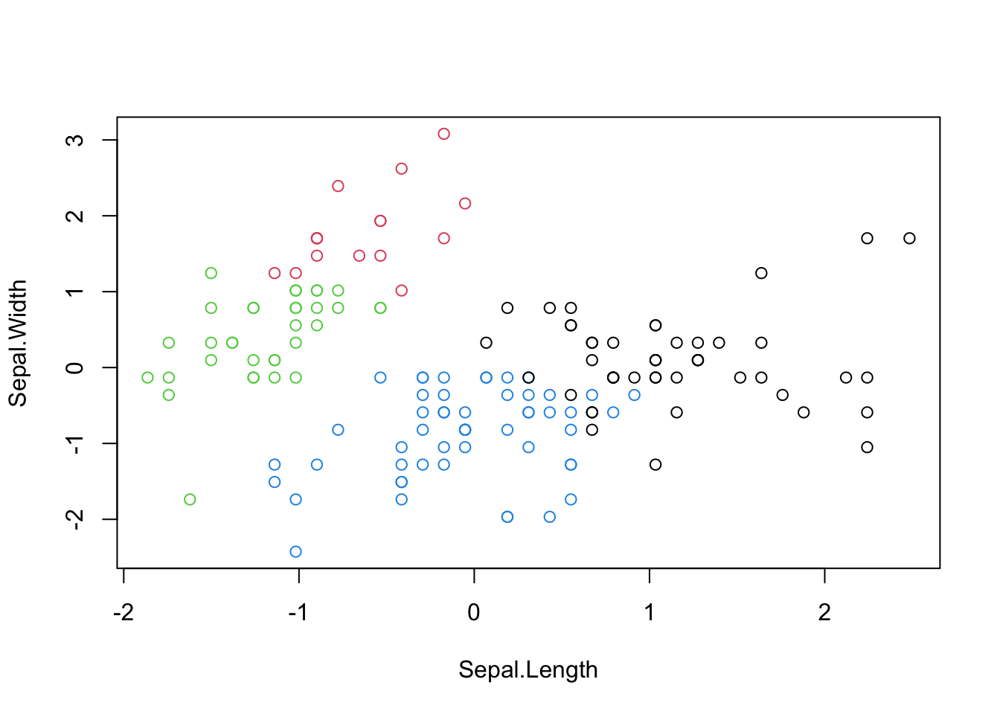
O pacote factoextra fornece uma série de melhorias para a análise de k-means. Além de gráficos mais sofisticados utilizando ggplot2, associa métodos hierárquicos e métodos de particionamento.
km2 <- function(dados,grupos){
k <- kmeans(dados,grupos)
fviz_cluster(k, iris2, repel = T)
}
km2(iris2,2)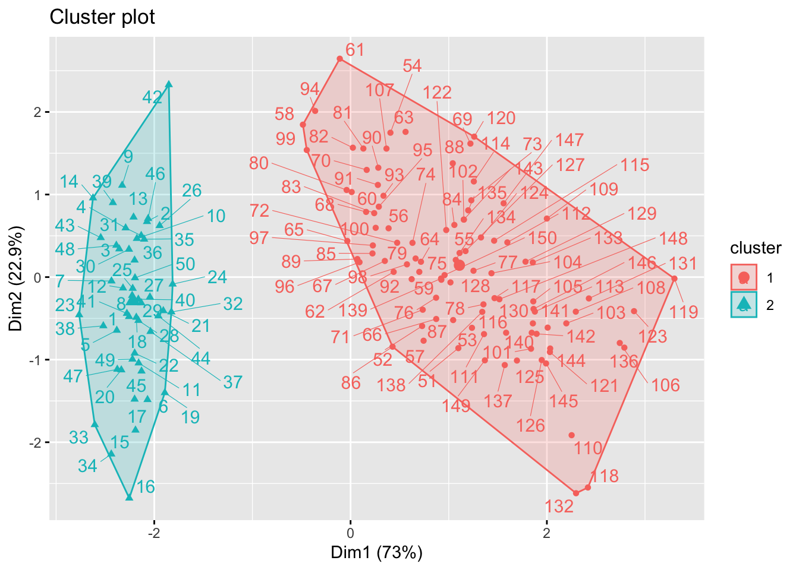
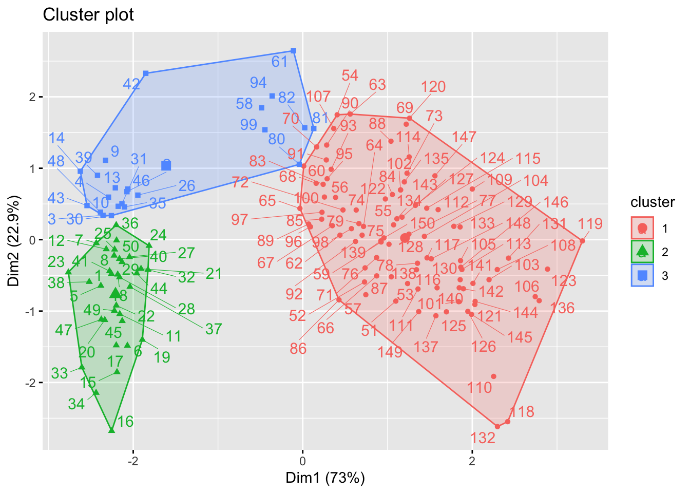
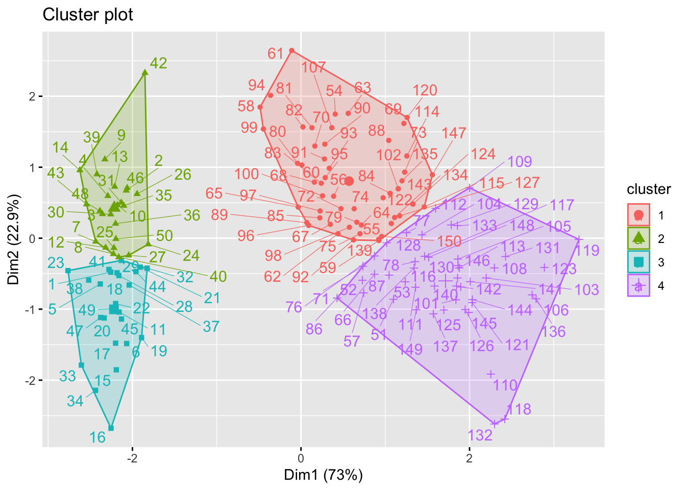
Número de grupos
A função factoextra::fviz_nbclust fornece métodos para a escolha de um número ótimo de grupos. O método wss (total within sum of square), busca um número de grupos que traga um bom custo-benefício entre o número de grupos (\(k\)) e a soma de quadrados total (\(SQT\)). Este custo-benefício é indicado onde a curva muda sua declividade, ou no ‘cotovelo’ (elbow) do gráfico de \(k\) por \(SQT\). Tem suas origens no trabalho de (Thorndike 1953).

O método silhouette busca o número de grupos que maximize o tamanho médio da silhueta. É baseado em uma medida sugerida por (Rousseeuw and Kaufman 1990), dada por
\[\begin{equation}
s(i) = \dfrac{b(i)-a(i)}{max\{ a(i),b(i) \}}
\tag{8.10}
\end{equation}\]
- \(-1 \le s(i) \le 1\)
- \(a(i)\): dissimilaridade média do elemento \(i\) em relação a todos os demais elementos do seu grupo \(A\)
- \(d(i,C)\): dissimilaridade média do elemento \(i\) em relação a todos os elementos do grupo \(C \ne A\)
- \(b(i) = \underset{C \ne A}{\mathrm{min}} \; d(i,C)\)
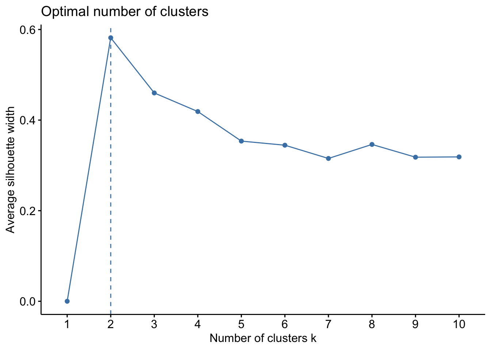
Proposto por (Tibshirani, Walther, and Hastie 2001), o método gap_stat (gap statistic) compara variação total intra-grupo para diferentes valores de k com seus valores esperados sob alguma distribuição de referência. A estimativa dos clusters ótimos será o valor que maximiza a estatística de gap (isto é, que gera a maior estatística de gap).
\[\begin{equation}
\mathrm{Gap}_{n}(k) = E^{*} \{ \mathrm{log}(W_k) \} - \mathrm{log}(W_k)
\tag{8.11}
\end{equation}\]
- \(E^{*}\) é o valor esperado sob uma amostra de tamanho \(n\) da distribuição de referência
- \(W_k = \sum_{j=1}^{k} \dfrac{1}{2n_j} D_j\)
- \(D_j = \sum_{i,i' \in C_j} d_{ii'}\)
- \(n_j = |C_j|\)
## Clustering k = 1,2,..., K.max (= 10): .. done
## Bootstrapping, b = 1,2,..., B (= 100) [one "." per sample]:
## .................................................. 50
## .................................................. 100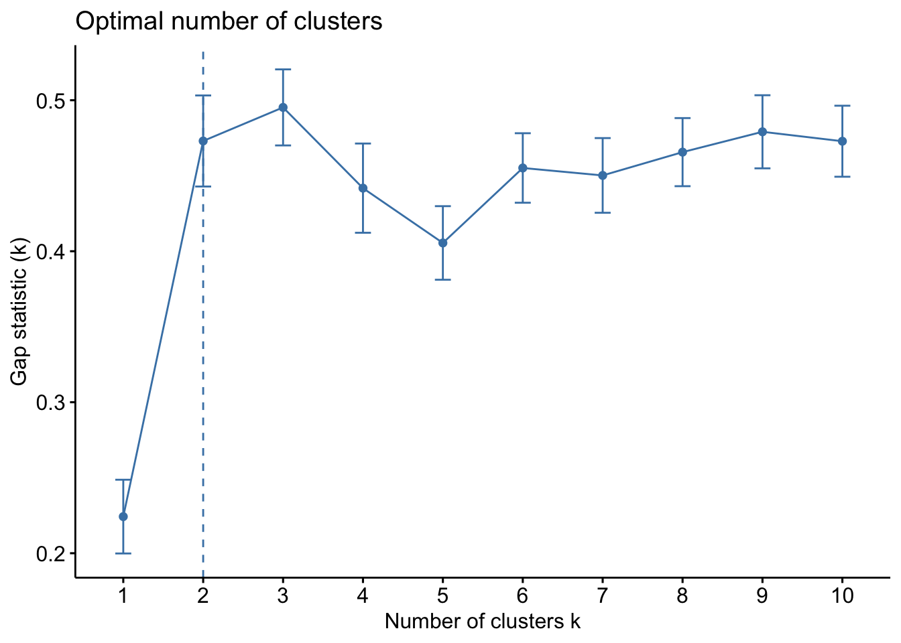
(a) a documentação da função
fviz_nbclust.(b) https://www.datanovia.com/en/lessons/determining-the-optimal-number-of-clusters-3-must-know-methods.
(c) A Seção e. Graphical Output Concerning Each Clustering, pg. 83-88 de (Rousseeuw and Kaufman 1990).
pib.(a) Verifique as sugestões do número ótimo de grupos com os diferente métodos disponíveis na função
fviz_nbclust.(b) Crie o grupamento que considerar mais adequado aos dados e apresente com a função
fviz_cluster.(c) Compare os resultados com o Exercício 7.3.
drinks, discutido no Capítulo 5.(a) Calcule as distâncias de Manhattan, euclidiana e de Minkowski com \(p=3\).
(b) Obtenha os modelos hierárquicos utilizando as três distâncias do item (a). Você nota alguma diferença?
(c) Obtenha a seleção inicial dos centróides a partir de proposta de (Hartigan 1975) apresentada na Equação \(\eqref{eq:j}\). Sugestão: escreva uma função que dependa dos dados e de \(k\), realizando alguma correção que considerar relevante.
(d) Calcule os centróides dos grupos obtidos no item (c).
(e) Calcule a \(VQI\) dos grupos obtidos no item (c) a partir da Eq. \(\eqref{eq:vqi}\).
(f) Calcule a \(SQT\) dos grupos obtidos no item (c) a partir da Eq. \(\eqref{eq:sqt}\).
(g) Verifique as sugestões do número ótimo de grupos com os diferente métodos disponíveis na função
fviz_nbclust.(h) Crie o grupamento que considerar mais adequado aos dados e apresente com a função
fviz_cluster.
(a) Calcule as distâncias de Manhattan, euclidiana e de Minkowski com \(p=3\).
(b) Obtenha os modelos hierárquicos utilizando as três distâncias do item (a). (PODE DEMORAR!)
(c) Verifique as sugestões do número ótimo de grupos com os diferente métodos disponíveis na função
fviz_nbclust.(d) Crie o grupamento que considerar mais adequado aos dados e apresente com a função
fviz_cluster.
Referências
Bishop, Christopher M. 1999. “Bayesian PCA.” In Advances in Neural Information Processing Systems, 382–88. https://papers.nips.cc/paper/1549-bayesian-pca.pdf.
Dua, Dheeru, and Casey Graff. 2019. “UCI Machine Learning Repository.” University of California, Irvine, School of Information; Computer Sciences. http://archive.ics.uci.edu/ml.
Forgy, Edward W. 1965. “Cluster Analysis of Multivariate Data: Efficiency Versus Interpretability of Classifications.” Biometrics 21: 768–69.
Hartigan, John A. 1975. Clustering Algorithms. Wiley. https://people.inf.elte.hu/fekete/algoritmusok_msc/klaszterezes/John%20A.%20Hartigan-Clustering%20Algorithms-John%20Wiley%20&%20Sons%20(1975).pdf.
Hartigan, John A, and Manchek A Wong. 1979. “Algorithm AS 136: A K-Means Clustering Algorithm.” Journal of the Royal Statistical Society. Series C (Applied Statistics) 28 (1): 100–108. https://www.labri.fr/perso/bpinaud/userfiles/downloads/hartigan_1979_kmeans.pdf.
Hotelling, Harold. 1933. “Analysis of a Complex of Statistical Variables into Principal Components.” Journal of Educational Psychology 24 (6): 417. https://psycnet.apa.org/fulltext/1934-00645-001.pdf.
Izbicki, Rafael, and Tiago Mendonça dos Santos. 2020. Aprendizado de Máquina: Uma Abordagem Estatística. http://www.rizbicki.ufscar.br/ame/.
Lloyd, Stuart P. 1957. “Least Squares Quantization in PCM.” Tecnical Note at Bell Laboratories in 1957, Published After in IEEE Transactions on Information Theory in 1982 28 (2): 129–37. https://ieeexplore.ieee.org/stamp/stamp.jsp?tp=&arnumber=1056489.
MacQueen, James, and others. 1967. “Some Methods for Classification and Analysis of Multivariate Observations.” In Proceedings of the Fifth Berkeley Symposium on Mathematical Statistics and Probability, 1:281–97. 14. Oakland, CA, USA. https://sci2s.ugr.es/keel/pdf/algorithm/congreso/1967-MacQueen-MSP.pdf.
Pearson, Karl. 1901. “On Lines and Planes of Closest Fit to Systems of Points in Space.” Philosophical Magazine 2 (11): 559–72. http://pca.narod.ru/pearson1901.pdf.
Rousseeuw, Peter J, and L Kaufman. 1990. “Finding Groups in Data.” Hoboken: Wiley Online Library. https://onlinelibrary.wiley.com/doi/pdf/10.1002/9780470316801.
Sokal, Robert R, and F James Rohlf. 1962. “The Comparison of Dendrograms by Objective Methods.” Taxon, 33–40. https://www.jstor.org/stable/pdf/1217208.pdf.
Thorndike, Robert L. 1953. “Who Belongs in the Family?” Psychometrika 18 (4): 267–76. https://link.springer.com/content/pdf/10.1007%2FBF02289263.pdf.
Tibshirani, Robert, Guenther Walther, and Trevor Hastie. 2001. “Estimating the Number of Clusters in a Data Set via the Gap Statistic.” Journal of the Royal Statistical Society: Series B (Statistical Methodology) 63 (2): 411–23. http://web.stanford.edu/~hastie/Papers/gap.pdf.
Exemplos baseados em https://cran.r-project.org/web/packages/ggfortify/vignettes/plot_pca.html.↩︎